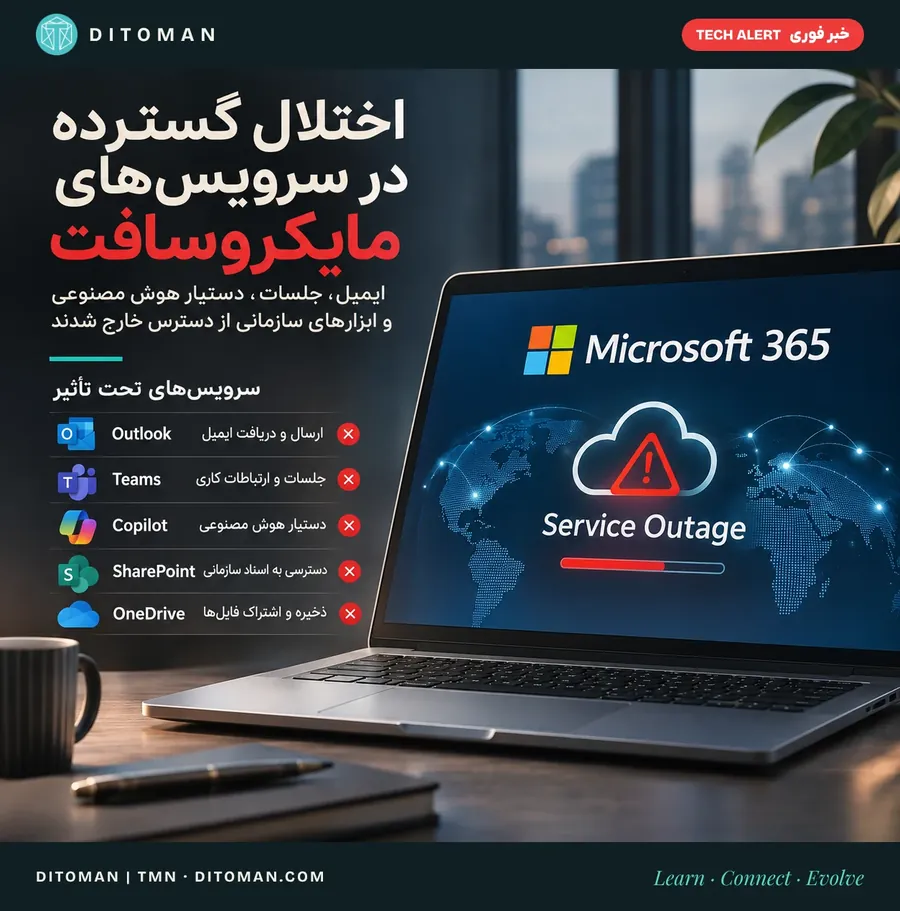
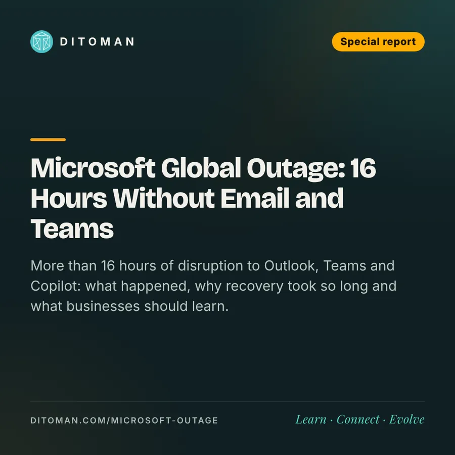

اختلال جهانی مایکروسافت؛ وقتی ایمیل، جلسات و ابزارهای هوش مصنوعی از دسترس خارج میشوند
Microsoft global outage: when email, meetings and AI tools go dark
بیش از ۱۶ ساعت اختلال در Outlook، Teams و Copilot؛ چه اتفاقی افتاد، چرا بازیابی طول کشید و کسبوکارها چه درسی بگیرند.
More than 16 hours of disruption to Outlook, Teams and Copilot: what happened, why recovery took so long and what businesses should learn.
0. در یک نگاه
از عصر پنجشنبه ۲۱ آبان (۱۲ نوامبر ۲۰۲۶)، میلیونها کاربر در دنیا به ایمیل، Teams، Copilot و دیگر خدمات Microsoft 365 دسترسی نداشتند. تا صبح جمعه، بیش از ۱۶ ساعت بعد، مایکروسافت هنوز بازیابی کامل را اعلام نکرده بود.
| شاخص | عدد |
|---|---|
| شروع اختلال | پنجشنبه ۱۲ نوامبر، حدود ساعت ۱۸ به وقت گرینویچ (۲۱:۳۰ تهران) |
| اوج گزارشهای Outlook در آمریکا | ۱۳۸٬۰۵۸ گزارش (Downdetector) |
| کشورها و مناطق با گزارش اختلال | ۷۴، در حدود یک ساعت |
| اوج گزارشها در دقیقه، پنج سرویس | ۱۹٬۶۵۰ (در یک پنجشنبه عادی کمتر از ۱۵) |
| مدت اختلال تا صبح جمعه | بیش از ۱۶ ساعت |
| نشانه حمله سایبری | به گفته مایکروسافت، هیچ |
تعداد گزارشها با تعداد کاربران آسیبدیده یکی نیست؛ اما مقیاس و سرعت گسترش اختلال را نشان میدهد.
1. دقیقاً چه اتفاقی افتاد؟
اختلال حوالی ظهر پنجشنبه به وقت شرق آمریکا شروع شد. ابتدا کاربران آمریکایی نتوانستند ایمیل بفرستند یا دریافت کنند. در کمتر از یک ساعت، گزارشها از بریتانیا، هند، نیوزیلند و دهها کشور دیگر رسید؛ هر جا که روز کاری شروع میشد، موج تازهای از گزارشها هم بالا میرفت.
- Outlook و Exchange Online: ارسال و دریافت ایمیل و باز شدن صندوق پستی
- Microsoft Teams: جلسات، تماسها و پیامهای کاری
- Copilot: بخشی از قابلیتهای دستیار هوش مصنوعی
- SharePoint و OneDrive: دسترسی به اسناد و فایلهای سازمانی
- ابزارهای هوش مصنوعی دیگر: OpenAI و Anthropic اعلام کردند اتصال ChatGPT و Claude به Microsoft 365 مختل شده است؛ یعنی درخواستهایی که به ایمیل، تقویم یا جستوجوی فایلهای کاری نیاز داشتند، انجام نشدند
2. چه کسانی آسیب دیدند؟
| بخش | نمونهها |
|---|---|
| دولتها | وزارتخانههای ژاپن بخش بزرگی از روز جمعه را با کاغذ کار کردند؛ نهادهای امنیتی و پلیس فدرال استرالیا هم درگیر شدند |
| بانکها | کارکنان مورگان استنلی و گلدمن ساکس در هنگکنگ به ایمیل و Teams دسترسی نداشتند |
| دادگاهها | دیوان عالی فیلیپین از تأخیر خبر داد؛ دادگاههای استرالیا با صندوقهای ایمیل غیرقابل استفاده روبهرو شدند |
| شهرداریها و مدارس | شهرهایی مثل میامی بیچ و آستین از مردم خواستند بهجای ایمیل تلفن بزنند؛ مدارس استرالیا هم درگیر شدند |
| هواپیمایی | ایرلاینهای IndiGo و Akasa در هند کانال پشتیبانی ایمیلیشان را از دست دادند |
| شرکتها | شرکت خودروسازی Workhorse جلسه اعلام نتایج مالیاش را عقب انداخت |
3. علت چه بود؟
مایکروسافت در توضیحات اولیه گفت تعدادی از سرورها بهطور غیرمنتظره از دسترس خارج شدند و سرورهای باقیمانده نتوانستند بار را تحمل کنند. به گفته این شرکت، مشکل از کاهش ظرفیت بود، نه افزایش ناگهانی ترافیک.
- فرایند اتصال امن: بخشی از سیستم که اتصالهای امن کاربران را برقرار میکند، زیر حجم درخواستها از کار افتاد
- بررسی خودکار سلامت: سیستمهای خودکار، سرورهای ناسالم را از مدار خارج کردند؛ کاری که بار را روی بقیه سنگینتر کرد و چرخه اختلال را طولانیتر
- یک تغییر شبکه: مایکروسافت یک تغییر اخیر در پیکربندی شبکه را برگرداند تا بررسی کند آیا در ماجرا نقش داشته یا نه
حمله سایبری؟
چارلز لامانا، معاون ارشد مایکروسافت، گفت هیچ نشانهای از فعالیت مخرب یا سایبری وجود ندارد. با این حال، علت ریشهای و نهایی هنوز بهطور قطعی اعلام نشده است.
4. بازیابی؛ چرا اینقدر طول کشید؟
- مرحله اول: مایکروسافت بهروزرسانیها را متوقف کرد، ترافیک را به مسیرهای دیگر فرستاد و سرورها را دوباره راهاندازی کرد
- مشکل بازگشت: وقتی کاربران برگشتند، بعضی سرورهای تازهراهاندازیشده دوباره از پا افتادند؛ مایکروسافت گفت روند بازیابی «آنطور که انتظار داشتیم پیش نرفت»
- محدودیت موقت ترافیک: در بعضی مناطق، ورود کاربران بهصورت کنترلشده و تدریجی انجام شد
- صبح جمعه: مایکروسافت از «نتایج مثبت در پایداری سرورها» پس از اعمال یک وصله، و «تثبیت اولیه و بهبود ظرفیت» خبر داد؛ اما گفت ظرفیت هنوز به حالت عادی برنگشته است
- ایمیلهای عقبافتاده: مهلت تحویل ایمیل در Outlook به ۴۸ ساعت افزایش یافت تا پیامهای معطلمانده گم نشوند
وضعیت این اختلال همچنان در حال تغییر است. آخرین وضعیت را در صفحه رسمی خدمات مایکروسافت بررسی کنید.
5. چرا این اتفاق اهمیت اقتصادی دارد؟
برای یک شرکت، قطع شدن Outlook یعنی تأخیر در دریافت سفارش، تأیید قرارداد و پاسخ به مشتری. اختلال Teams جلسات و هماهنگی تیمها را عقب میاندازد و مشکل SharePoint یا OneDrive، دسترسی کارکنان به اسناد مشترک را میبندد.
در شرکتهای بزرگ، این اختلالها همزمان هزاران کارمند را بیابزار میکنند؛ حتی بدون اینکه یک بایت داده از دست برود. هنوز برآورد معتبر و جامعی از خسارت مالی جهانی منتشر نشده است و نمیتوان رقم مشخصی را بهعنوان زیان اعلام کرد.
یک لایه تازه: هوش مصنوعی
این بار، ابزارهای هوش مصنوعی هم از کار افتادند. وقتی دستیارهای هوشمند به ایمیل، تقویم و فایلهای یک سرویس وصلاند، قطعی آن سرویس، دستیار را هم بیاثر میکند. هرچه کار بیشتر به این زنجیرهها متکی شود، اهمیت پایداری هر حلقه بیشتر میشود.
6. مراقب کلاهبرداری باشید
بانکهایی مثل استاندارد چارترد و ING استرالیا هشدار دادند که کلاهبرداران در چنین روزهایی خود را «پشتیبانی فنی» جا میزنند. نکته نگرانکننده این است که بخشی از سیستمهای امنیتی ایمیل که معمولاً این پیامها را فیلتر میکنند، خودشان هم درگیر اختلال بودند.
- هیچ لینکی را که برای «رفع مشکل حساب» آمده، بدون بررسی باز نکنید
- رمز عبور یا کد تأیید را به هیچکس ندهید
- اطلاعیهها را فقط از صفحه رسمی وضعیت خدمات یا واحد IT سازمان خودتان دنبال کنید
7. تاریخچه کوتاه: این اولین بار نیست
- ژوئیه ۲۰۲۴: یک بهروزرسانی معیوب نرمافزار امنیتی CrowdStrike، میلیونها رایانه ویندوزی را در دنیا از کار انداخت؛ از فرودگاهها تا بیمارستانها
- ۲۰۲۵ و ۲۰۲۶: Microsoft 365 و Azure چند بار دیگر هم اختلالهای چندساعته داشتند
درس مشترک همه این حوادث: هرچه سرویسها متمرکزتر و پرکاربرتر میشوند، یک خطای کوچک میتواند اثر جهانی داشته باشد.
8. تأثیر بر ایران
شرکتهای ایرانی که برای مکاتبات بینالمللی، همکاری با مشتریان خارجی یا مدیریت اسناد از Microsoft 365 استفاده میکنند، با همین مشکلات دسترسی روبهرو شدند.
برای شرکتهای صادراتی، تیمهای دورکار و کسبوکارهای فناوری، مهمترین ریسک، وابستگی کامل ارتباطات کاری به یک ارائهدهنده است. البته دادهای برای تعیین تعداد کاربران یا شرکتهای ایرانی آسیبدیده در دسترس نیست.
9. شرکتها چگونه آسیب کمتری ببینند؟
راهحل کنار گذاشتن خدمات ابری نیست؛ طراحی کاری است که با قطع یک سرویس، کل سازمان متوقف نشود.
| اقدام | چرا مهم است |
|---|---|
| مسیر ارتباطی جایگزین | تیم و مشتریها بدانند روز قطعی از کجا با شما در تماس باشند |
| نسخه پشتیبان مستقل | فایلهای حیاتی فقط در یک سرویس نباشند |
| دسترسی آفلاین | اسناد مهم روی دستگاه هم در دسترس باشند |
| فهرست تماس اضطراری | شماره تلفن افراد کلیدی، بیرون از ایمیل |
| تمرین دورهای | برنامه تداوم کسبوکار فقط روی کاغذ نماند |
| پایش وضعیت | یک نفر مسئول دنبال کردن اطلاعیههای رسمی باشد |
10. نگاه دیتومان
این اختلال یک درس مهم درباره آینده اقتصاد دیجیتال دارد: هرچه کسبوکارها بیشتر به خدمات ابری و هوش مصنوعی متکی میشوند، اهمیت زیرساخت جایگزین، بازیابی سریع و مدیریت ریسک عملیاتی بیشتر میشود.
قطعی فقط یک خطای فنی نیست؛ آزمونی است برای اینکه هر سازمان چقدر برای روز بد آماده است.
فرصت مهم برای صنعت فناوری، توسعه ابزارهایی است که بتوانند هنگام قطع یک سرویس، ارتباطات و فعالیتهای حیاتی را بدون توقف کامل ادامه دهند.
بیشتر بخوانید
منابع
- CIO&Leader: Outlook outage runs into Friday as recovery stalls
- IBTimes: outage hits 74 countries; ChatGPT and Claude connectors affected
- The Next Web: outage passes 12 hours, organisations affected
- TechRadar: live updates, 13 November
- CNN: live updates
- Nikkei Asia: outage spills into Asia-Pacific
- Benzinga: outage spills over to OpenAI and Anthropic
- TechRepublic: over 130,000 Outlook outage reports
- Microsoft: official service status
آخرین بازبینی: ۲۲ آبان ۱۴۰۵. وضعیت این اختلال در حال تغییر است؛ آخرین وضعیت را در صفحه رسمی مایکروسافت ببینید.